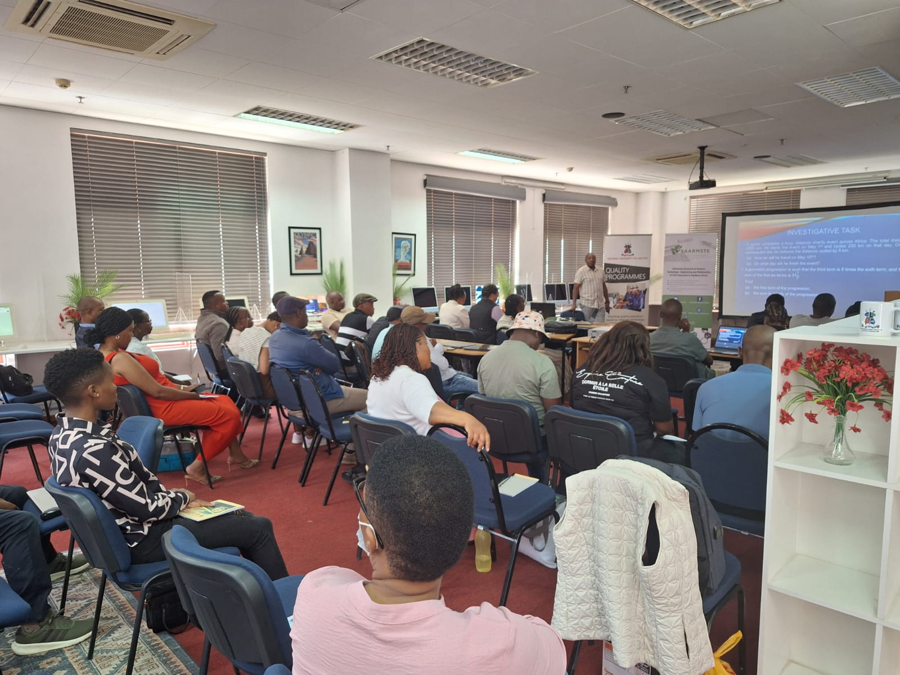

Guest Lecture: SAARMSTE Lesotho Chapter Annual Conference, November 2025 | Format: Virtual Guest
On Saturday, November 8, Mr. Matthew Nyaaba had the privilege of serving as a Guest Speaker (virtually) at the Annual Conference of the Southern African Association for Research in Mathematics, Science, and Technology Education (SAARMSTE), Lesotho Chapter, through the kind courtesy of Mr. Sechaba Koma. Mr. Nyaaba began his presentation with a captivating AI-generated video podcast, created using ChatGPT and NotebookLM, which introduced his professional and research background. This innovative opening immediately captured participants’ attention and exemplified the creative ways AI can be used for academic self-presentation.
He opened the session by discussing the global diffusion of Artificial Intelligence (AI) and invited participants to share their own experiences using AI tools in education and research. Participants mentioned using ChatGPT, Copilot, and Canva for writing, design, and professional tasks. This discussion transitioned into an analysis of OpenAI’s Global Usage Insights (Mid-2025) and Microsoft’s AI Diffusion Report (2025), two reports that provided global perspectives on AI adoption and use.
Findings from the OpenAI Global Usage Report (Mid-2025)
Drawing from the OpenAI Usage Report, Mr. Nyaaba explained that AI use has become increasingly inclusive, with the gender gap narrowing from 37% in January 2024 to 52% female-identified users by July 2025. He noted that the fastest growth occurred in low- and middle-income countries, where engagement increased more than fourfold by May 2025.
He further outlined key usage patterns from the report:
- Usage intents: Asking (49%), Doing (40%), and Expressing (11%).
- Writing remains the dominant work-related task.
- Approximately 70% of AI use is non-work related, compared to 30% for work purposes.
These statistics resonated strongly with participants’ responses during the session. As they described how they engage with AI tools, their practices reflected the same global patterns identified by OpenAI—asking questions, performing practical or academic tasks, and using AI for creative expression. This connection between global data and participants’ lived experiences reinforced the universality of AI engagement across diverse cultural and economic contexts.
Insights from the Microsoft AI Diffusion Report (2025)
Mr. Nyaaba also highlighted findings from the Microsoft AI Economy Institute’s AI Diffusion Report (2025), one of the first comprehensive attempts to measure global AI adoption rates. The report shows significant disparities in diffusion across regions. Countries such as Singapore (58.6%), UAE (59.4%), and Norway (45.3%) lead in AI adoption, while most of Africa (including Lesotho) remains below 10% diffusion.
He used this data to emphasize the urgent need for inclusive AI literacy across the African continent. With such limited diffusion, Africa’s representation in AI-generated content remains low, constraining the visibility of African knowledge systems, languages, and perspectives within global AI models. He noted that mitigating bias requires action at two levels: the developer level, through inclusive dataset design, and the educator level, through human-centered prompt engineering and classroom integration practices that emphasize equity and contextual relevance.
Engaging Dialogue and Ethical Reflections
The session was highly interactive. One participant, Dr. Lucia Lisene, raised a question about how to assess students in the age of AI, particularly how teachers can design questions that discourage academic misuse. Mr. Nyaaba commended the concern and explained that AI should be seen as a supportive learning partner and emphasis should be on context over content. He encouraged educators to refocus education toward performance-based and critical thinking assessments, moving beyond traditional recall-based evaluations that often enable academic dishonesty.
He further encouraged participants to integrate AI intentionally into their course outlines, establish classroom-level AI guidelines, and experiment with prompt-based assessments, a strategy where students critically evaluate AI-generated responses as part of their learning process. Another participant (Mr. Lereko Mohafa) asked about the ethical use of AI in research, particularly regarding data analysis and plagiarism risks. Mr. Nyaaba acknowledged that AI-assisted data analysis is becoming increasingly common but cautioned researchers to uphold ethical standards. He pointed out that tools such as ChatGPT now offer data privacy controls, allowing users to disable data sharing, but advised avoiding the use of sensitive personal or institutional information.
Conclusion and Reflections
The session concluded with participants expressing deep appreciation for the opportunity to learn, reflect, and exchange ideas on the human-centered and responsible use of AI in education. The Lesotho Chapter, led by Dr. Sikeme Raphoka… commended Mr. Nyaaba’s presentation for bridging global data insights with African educational realities. Through this dialogue, Mr. Nyaaba underscored that Africa must move from being AI consumers to active co-creators, by fostering critical AI literacy, developing local content, and ensuring that African perspectives are represented in the evolving landscape of global AI innovation.